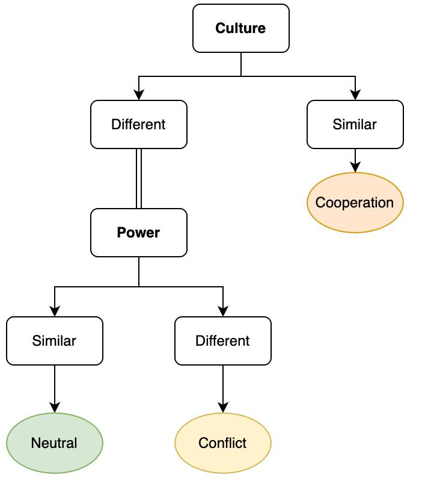
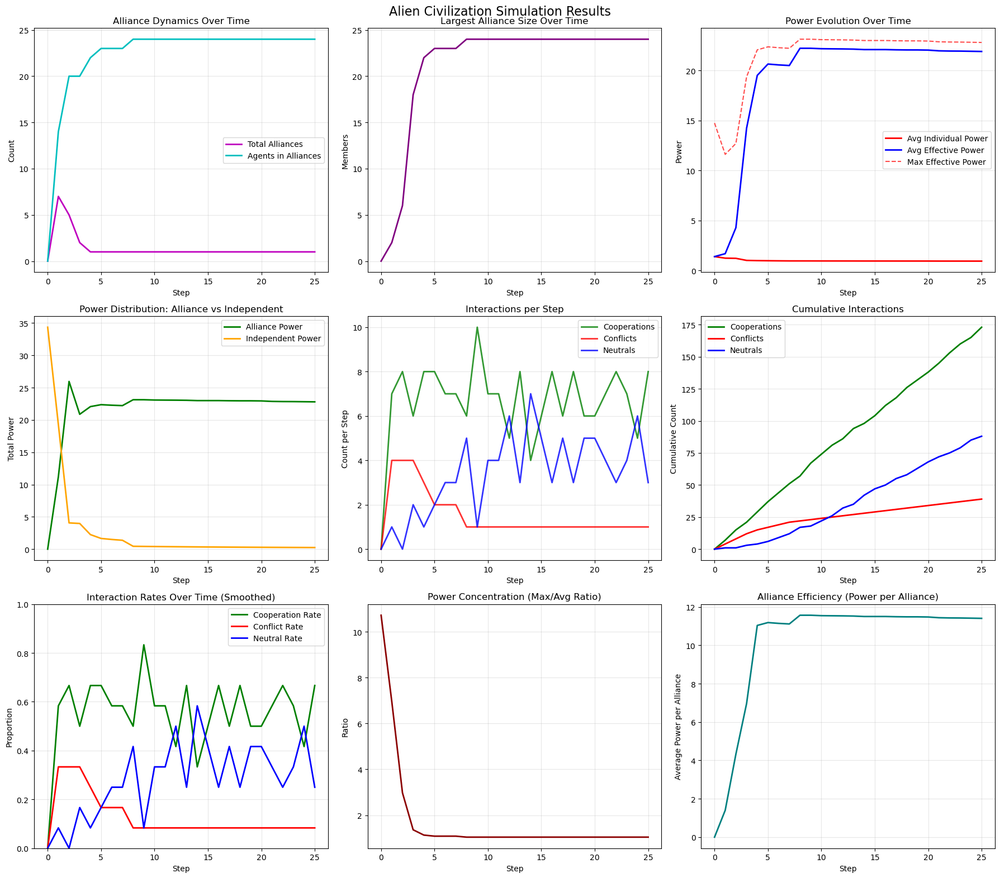
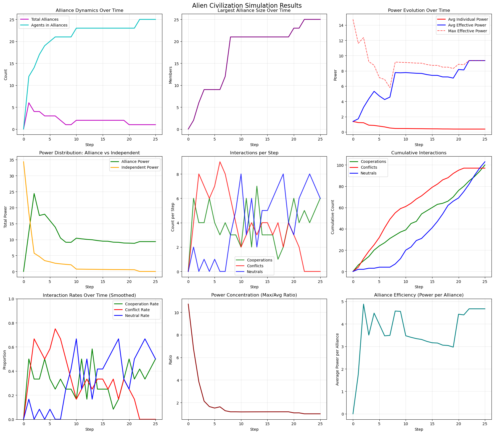
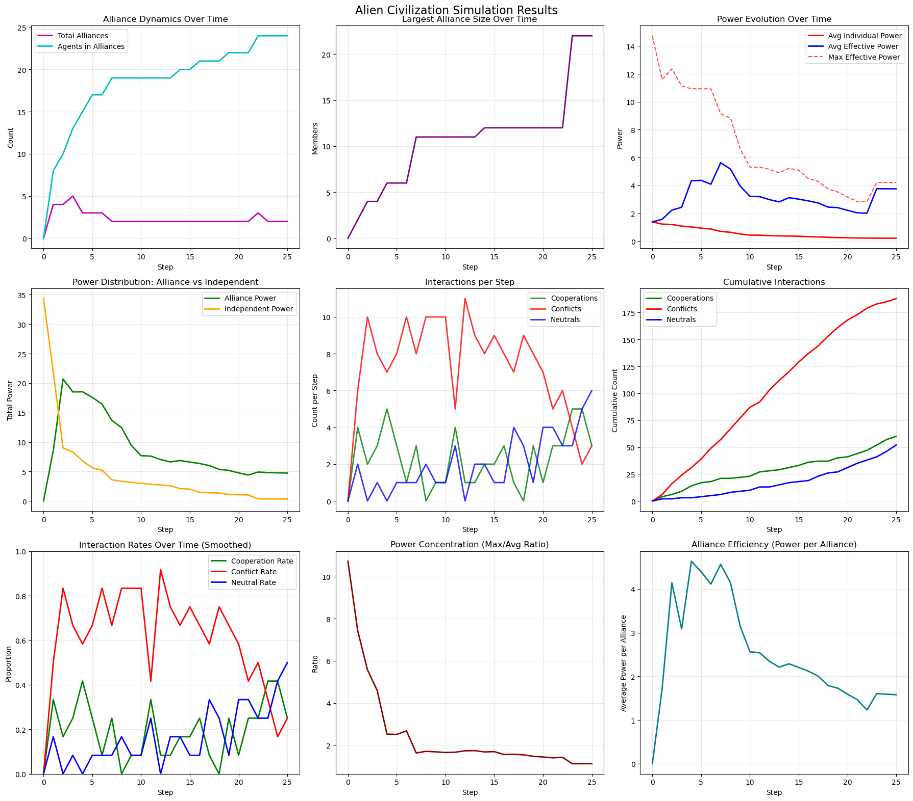

Group Members:
Our problem arises from the situation in which "group of people are gathered together, but each person comes from a completely different planet". Given the open-ended nature of the problem the solution has to be built from an analysis of the problem and precise assumptions.
What is the definition of "people" and why are they coming from "different planets"? What does "completely" mean, and why did they "gather together" in the first place? Answers to these questions provide a framework that can serve as a starting point for building a descriptive model and studying the situation in formalized detail. In the next section, we outline our interpretation of the situation.
When addressing "people" coming from "completely different planets," we begin with a science fiction scenario. Let's imagine one possibility:
In the distant future, Earth's environment is destroyed, making the surface uninhabitable for thousands of years. Facing this challenge and potential extinction, humanity decides to build evacuation spaceships that are sent throughout the universe in search of habitable planets. Each ship sets course for different corners of the known universe to find livable worlds and establish viable colonies.
There remains hope of returning to Earth once the surface can again support life. The plan is to leave sensors and communication devices behind to inform all evacuation ships and future colonies about Earth's environmental status and signal when return is possible. The expectation is that this won't happen soon, so every colony is instructed to send one representative back to Earth when the communication sensors give the green light.
Prolonged life on distant, completely different planets impacts the evolutionary pathways of humankind. More than 10,000 years pass before Earth sends the signal to return. At that point, none of the colonies' representatives know who they will encounter at this intergalactic reunion. Humans have been changed by their environments to the extent that they are alien to each other. Not only have institutions and cultures been modified, but even physical appearances have adapted to life on planets that only sometimes resemble Earth. These new homeworlds have also provided different environments for economic growth and technological progress.
What will happen when people from these different planets meet back on Earth? Are these people similar enough to find opportunities for cooperation, or are they so dissimilar that conflict will emerge? Or are they locked in stalemates based on technological advancements that create deterrent power, keeping them neutral toward each other? The following model aims to provide insight into what we might expect from this imaginary scenario.
We present an agent-based model simulating the interactions of representatives from human colonies dispersed across different planets who reunite on Earth after millennia of separation. This model examines how cultural diversity and power asymmetries influence alliance formation, cooperation, conflict, and emergent social structures.
The model initializes N agents (default N=50), each representing a distinct planetary colony. Each agent i is characterized by two primary attributes:
Culture (ci): Sampled from a normal distribution with mean μ uniformly distributed over [0, culture_spread] and standard deviation σ = 0.1. This represents the ideological, behavioral, and potentially physiological adaptations developed by each colony.
Power (pi): Sampled using a weighted combination of normal and log-normal distributions: pi = α · LogN(0,1) + (1-α) · N(0,1) + , where α is the skewness coefficient (default α=1, yielding a purely log-normal distribution). Power represents technological advancement, economic capacity, and military strength developed by each colony.
Interaction DynamicsAt each time step, agents are randomly paired for bilateral interactions. For any pair of agents (i,j), the interaction type is determined by a hierarchical decision rule:
Alliance DynamicsCooperative interactions lead to alliance formation or expansion through the following mechanisms:
Alliance membership affects each agent's effective power: Peff,i = Σj∈Alliance(i) pj, representing the collective strength available to alliance members. |
 |
Conflicts are resolved through power comparison, with both winner and loser experiencing power reduction proportional to the loser's effective power (default 10% reduction). This mechanism represents the costly nature of conflict regardless of outcome.
The model allows us to study dynamics of alliances and cooperation in a society of alien agents with different cultural traits and power levels. By varying parameters, we can observe the dynamics of this imaginary intergalactic reunion. The key experimental parameter is culture_spread, which controls cultural diversity in the population. When culture_spread = 0, all agents have identical culture (ci = 0 for all i). As culture_spread increases, agents' cultures become more uniformly distributed across the [0,1] interval, representing greater ideological and behavioral divergence among colonies.
We imagine 3 different scenarios:
Here are the results of the simulation for each scenario:

In this scenario, agents have similar cultural traits, leading to high cooperation rates and the formation of large alliances or potentially even only one alliance. The society remains stable with minimal conflict, and power is distributed relatively evenly among the alliances.

Here, cultural differences lead to a mix of cooperation and conflict. Alliances form but are smaller and initially more fragmented. Power is concentrated in a few larger alliances which deter each other from conflicting action resulting in more neutral dynamics.

In this scenario, the significant cultural differences result in high conflict rates and minimal cooperation. As power is depleted by conflicts, the cooperation and neutral dynamics are more pronounced. Running this scenario for longer time periods leads to a switch in the dynamics where neutrality is the prevalent strategy and cooperation is on the rise.
Even though the model is based on an unrealistic scenario of intergalactic reunion of humans from different planets as it was derived from a science fiction story, it provides valuable insights into the dynamics of cooperation and conflict in diverse cultural settings. It is based on the real history of separated human civilizations which evolved in different environments and especially due to population constraints (Kremer, 1993) developed different levels of technology and therefore also military power. Therefore, it has a potential to be applied to real-world scenarios where cultural diversity and power dynamics play a crucial role in societal interactions.
The insights gained from this simulation can inform various fields, including sociology, political science, and conflict resolution. By understanding the dynamics of cooperation and conflict in diverse cultural settings, policymakers and researchers can develop strategies to foster collaboration and mitigate tensions in real-world scenarios.
In our main results, we only vary the cultural diversity, but further analysis should analyse the impact of having a more skewed power distribution as well as smaller and larger reduction in powers at conflict. Future iterations of the model could incorporate additional factors such as economic incentives, communication styles, and environmental influences to create a more comprehensive understanding of intergroup dynamics. Furthermore, applying the model to historical or contemporary case studies could provide valuable lessons for navigating complex social landscapes.